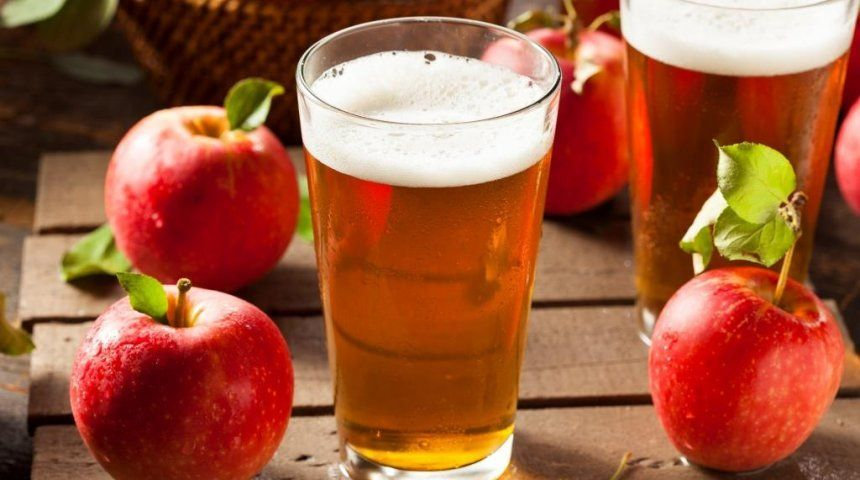

Домашний сидр – простой рецепт

Сидр известен еще со средних веков. За право называться родиной классического яблочного сидра борются Франция, Германия, Великобритания. Кто бы это ни был, но создатель сидра подарил миру восхитительный, легкий и свежий напиток, который можно легко приготовить в домашних условиях.
Для приготовления игристого напитка понадобятся яблоки, количество их зависит от желаемого выхода вина. Подойдут любые сорта, и необязательно использовать яблоки только одного сорта. Можно поэкспериментировать – сделать партию сидра из кислых яблок, другую – из сладких, и еще одну – из смеси сортов. Потом сравните, что вам понравится больше. Вместо яблок можно взять уже готовый свежевыжатый сок. Однако, поскольку в магазинах такой не продается, сок нужно выжимать самостоятельно. Поэтому вам понадобится соковыжималка. Чтобы процесс брожения прошел быстрее, подготовьте дрожжи (около 2 г на 10 л сока), лучше винные. Подойдут и обычные, хлебопекарные, однако с винными дрожжами вкус сидра будет более ярким, насыщенным, фруктовым. Еще понадобятся чистые стеклянные бутылки и большая пластиковая канистра или бочка.
Ингредиенты:
|
яблоки |
по вкусу |
|
дрожжи |
из расчета 2 г на 10 л сока |
Приготовление:
Домашний яблочный сидр не хранится долго (около недели), поэтому лучше делать его небольшими порциями. Наслаждайтесь охлажденным игристым напитком в кругу семьи и друзей.